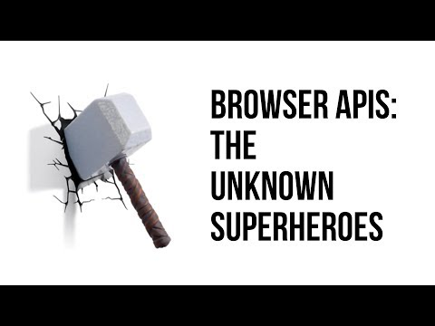
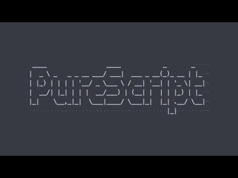
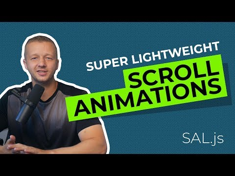

The Future Belongs To You (And Your JavaScript)Dynamic Code Instrumentation with Hacked Interpreters || James PowellI’m Good at JavaScript, I Swear

Browser Apis: The unknown superheroes
Videos
Winning With Simple, Even Linear, Models || Vincent D WarmerdamModern C++ in Embedded SystemsInside the Cheeseshop: How Python Packaging WorksSemantic, Searchable Webapps with Angular
Top videos
Guide to Your Own AI App in 3 Easy Steps

PureScript: Tomorrow’s JavaScript TodayBLAZOR: Modern Web Development with .NET and WebAssemblyPi-thon: Teaching Maths with Python!
Top populares

Super Lightweight Scroll Animations with Sal.js - 2.8kb!New Adobe XD Updates Demo - Responsive Design & Time TriggersHow to Apply a Color Scheme Palette to a ProjectThe Top 6 Color Scheme Pickers and How to Use Them